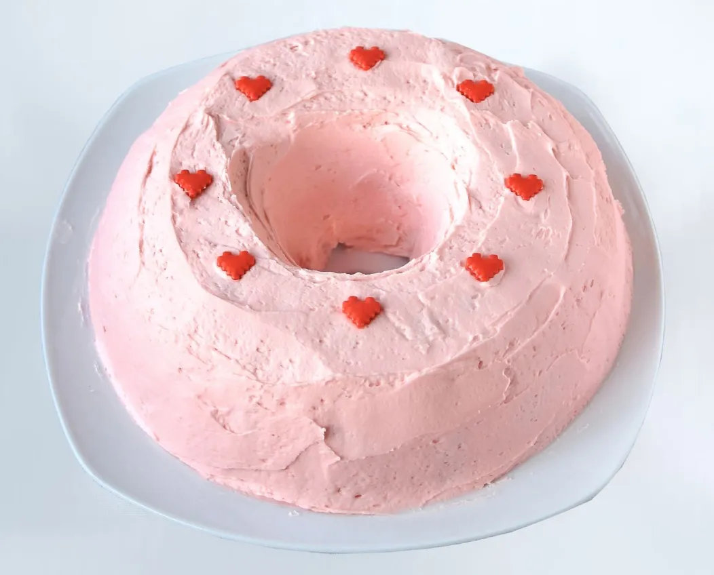
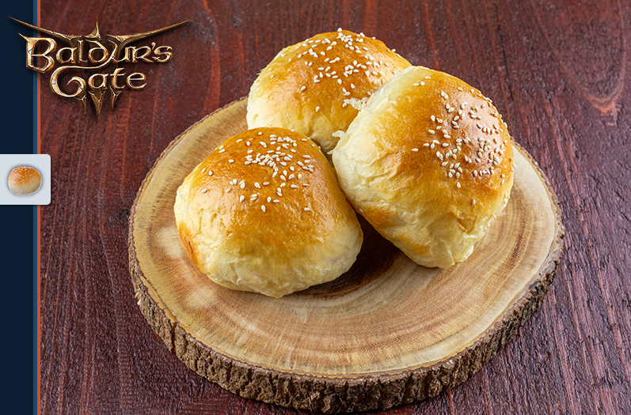
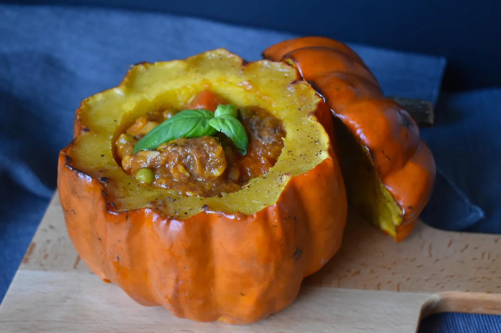
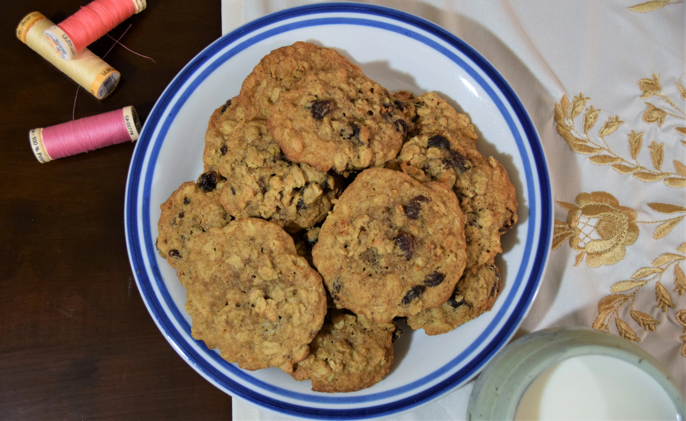
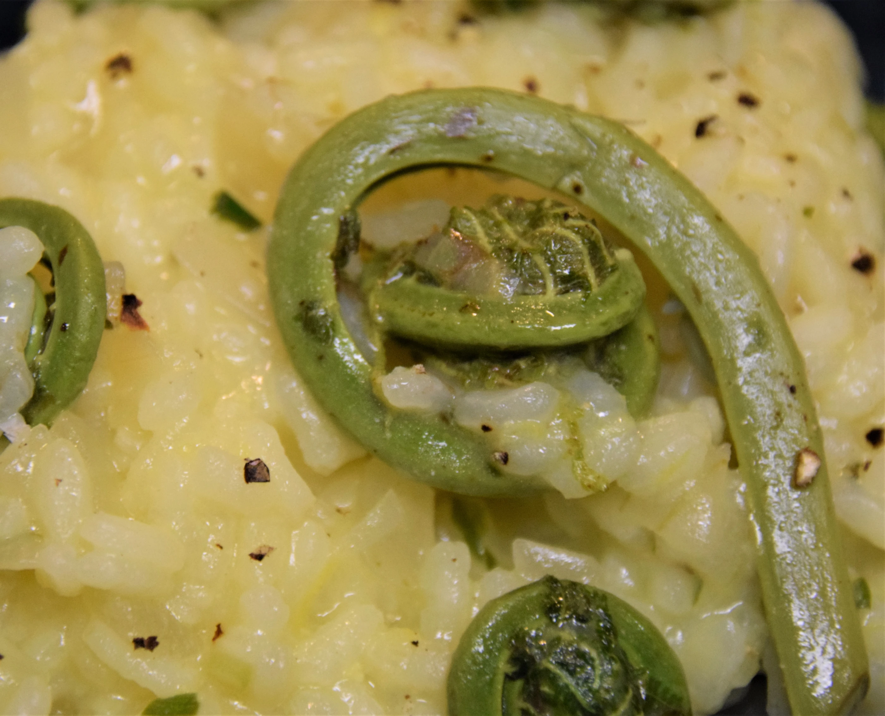

Pink Cake

Pink Cake may sound basic, but this dainty dessert hides a secret ingredient: melon! In STARDEW VALLEY, Pink Cake is a favorite of several villagers. The in-game thumbnail shows a cute pink tube cake topped with red heart sprinkles. The ingredients are listed as flour, sugar, egg, and pink melon (a fruit unique to the game, which looks like a pink cantaloupe).
Recipe
- Preheat your oven to 350°. Grease a tube pan with shortening, dust it with flour and set it aside.
- Sift the flour and baking powder together in a bowl and set it aside.
- In a mixing bowl, combine eggs, sugar, cream of tartar, melon flavoring, food coloring, and salt. Mix them at medium-high speed for 10 minutes until the mixture is thick and foamy.
- Gradually fold the flour mix into the egg mix. Be careful not to over mix and ensure all flour is fully incorporated.
- In a separate bowl, mix together the melon puree and vegetable oil. Gently fold this into the batter.
- Pour your batter into the prepared pan, tap it to remove any large air bubbles, and bake it for 25 minutes at 350°.
- Lower the oven temperature to 330° and bake for another 25-30 minutes. When the cake detaches from the pan sides, it's done.
Buttered Buns

These simple buns are nice small dinner buns that also work really well as sliders. This easy recipe is sure to replenish you and your character.
Recipe
- Combine ⅓ cup milk and ¼ cup bread flour in a small pan. Heat over medium-high heat and whisk until it comes together, about 1 minute. Set aside and allow to cool down.
- Combine the yeast and milk and let it rest for 5 minutes, allowing the yeast to become active. Combine the bread flour, salt, and sugar in a large bowl of a stand mixer. Add the mixture in the pan, the yeast milk mixture, and egg. Mix until it just comes together.
- Add 1 tablespoon of butter to the bowl. Mix until it is well incorporated, about 2 to 3 minutes. Continue adding the butter this way until all of it has been added. It is extremely important to do this very slowly. If you add the butter too quickly, the dough will never come together and will never gain the strength it needs to form.
- Increase the speed to medium and knead the dough until it comes together into a ball, about 10 minutes. The dough is worked enough if it doesn’t rip when you tug it slightly. Transfer to a lightly floured work surface and shape into a rough ball.
- Transfer to an oiled bowl, cover, and let rest for 1 hour or until it has doubled in size. Once doubled, punch down and knead. Prepare a baking sheet by placing parchment paper down.
- Divide the dough into 12 equal portions (roughly 88 grams each). Shape into round balls and place on the baking sheet. Cover with a kitchen towel and let rest for 30 minutes, or until doubled in size.
- Preheat an oven to 350°F. In a small bowl, whisk an egg and 2 tablespoons of milk. Remove the plastic wrap from the baking sheet and brush each of the buns with egg wash. Sprinkle generously with sesame seeds. Place in the oven and bake for 23 to 25 minutes or until golden brown.
Meat Stuffed Pumpkin

Have you ever wanted to eat like Link? Well now is your chance with this hearty recipe.
Recipe
- Preheat the oven to 350˚F. Clean a pumpkin by washing, cutting off the top, and removing its insides. Season the cavity with salt and pepper, then place the entire pumpkin in a baking dish. Set this and the top aside.
- In a separate bowl, keep the dried bread cubes ready. Sauté onion and celery in a frying pan for about 3-4 minutes. Remove the casing from your sausage, if applicable, and crumble it into the pan with the onions and celery. Continuously cook this until it becomes thoroughly browned.
- Include chopped apples into the sausage mix, adding herbs and garlic for an aromatic finish, and allow to cook for another 3-4 minutes. Upon completion, transfer this cooked mixture over the bread cubes, stirring until well combined. Blend eggs into the broth and pour over the bread cubes, then lightly toss. Afterward, incorporate cranberries and toss once more.
- Fill the prepared pumpkin with the stuffing mixture. Replace the top and bake for 40 minutes. Afterwards, remove the top and continue to bake for an additional 20 minutes. You may choose to either slice and serve or scoop to serve. Enjoy your stuffed pumpkin!
Mom's Cookies

These fresh made oatmeal raisin cookies are made with love and will remind you of Mom. Using this recipe will make this in game treat come to life.
Recipe
- Begin by combining the orange zest, raisins, and orange juice in a large mixing bowl and allow to soak. Concurrently, whisk together the all-purpose flour, whole wheat flour, cinnamon, kosher salt, and baking soda in a medium-sized bowl.
- In the large mixing bowl, cream the orange zest with the unsalted butter, brown sugar, and white sugar until the mixture becomes light and fluffy. Subsequently, blend in the egg and vanilla extract.
- Gradually fold the flour mixture into the wet ingredients until just combined, leaving a few patches of flour. Drain the raisins and add them to the large bowl, along with the oats.
- Cover the mixture with plastic wrap and refrigerate for approximately 30 minutes. During this chill time, preheat your oven to 375°F and prepare 2 baking sheets with parchment paper.
- After chilling, scoop the dough onto the prepared baking sheets, spaced about 2 inches apart. Bake for 9-10 minutes until slightly risen and golden brown, ensuring not to overbake for the sake of maintaining chewiness. Allow to cool for 5 minutes before transferring to a wire rack and store in an airtight container at room temperature for up to 3 days after cooling.
Fiddlehead Fern Risotto

This rare dish in Stardew Valley is a perfect springtime meal. Fiddlehead ferns can be foraged or bought at your local farmers market.